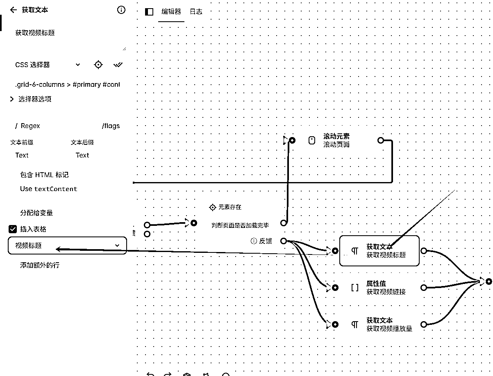
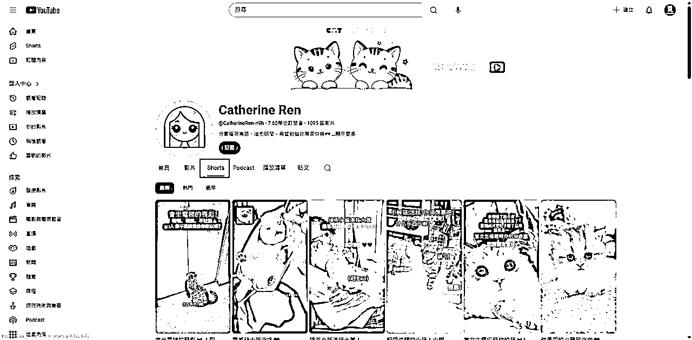
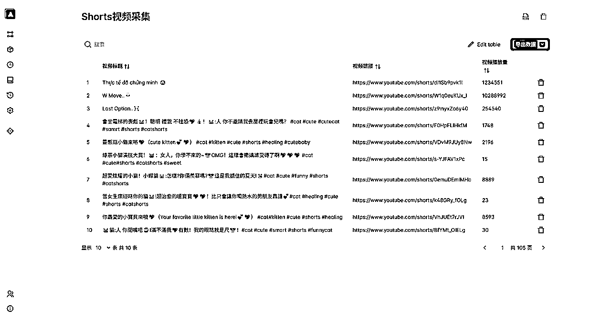
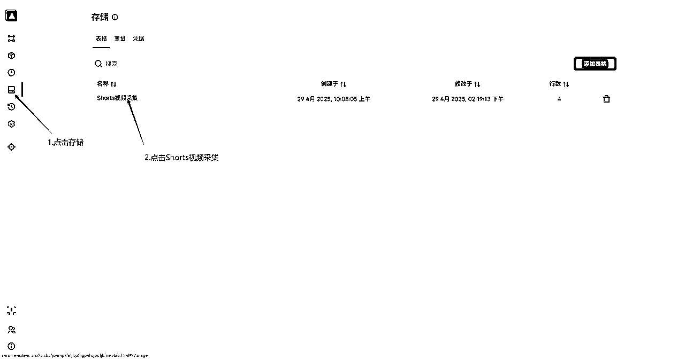
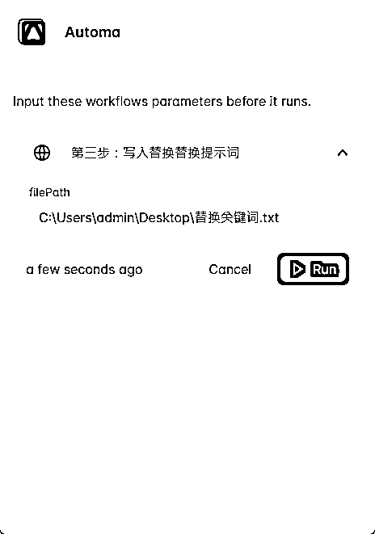

来源：https://wm1881zs6s.feishu.cn/docx/DpDGdcMVUouBMIx4PPPcv8Ipnab
大家好，我是大臣。
从今年3月份开始，我加入了YouTube航海计划，专注于AI动物故事赛道。
为什么选择这个赛道？
因为动物故事内容天然具有情感共鸣，容易吸引观众，尤其是Shorts（短视频）形式，播放量和互动率都非常高。
问题来了：做视频太费时间了！从找素材、剪辑到发布，每一步都需要大量精力。
3月航海后我一直在深耕，当下的大环境：去主动All in AI
于是我决定用AI+RPA（机器人流程自动化）来解决这个问题，经过几个月的摸索，我终于实现了素材的自动化产出（RPA用的是AUTOMA，也就意味着它可以靠指纹浏览器实现多线程。一个Chrome浏览器就可以运行一个脚本）。
五一假期期间写下了这篇帖子，我想把我的经验分享给大家，希望能帮你在YouTube赛道上少走弯路。
如果你能理解这套流程，其他AI赛道也能轻松驾驭。
我目前做视频的核心思路很简单：就是抄（抄对标视频）——“抄”不是照搬，是拆解、优化、再创作。
具体来说，分为以下7个步骤：
目前第5步（图生视频提示词）和第7步（剪辑）还没完全自动化
第5步我有一版提示词，只不过效果不是很理想。
第7步我自己做的动物视频是要精剪的，暂时没法用脚本实现，如果是对视频质量没那么高的话，倒是可以用脚本实现自动剪辑
但其他步骤已经可以用脚本搞定。接下来我会详细拆解每一步
目前还没有完全自动化，需要手动指定采集哪个账号或视频。脚本的作用是帮你把数据自动填到表格里，省去手动操作的麻烦。
但这步其实是可以全自动化的，可以去找一批在做赛道的头部账号，让脚本实时去监控这些账号，一有视频更新了就采集(我后面可能会做这个功能)。
在脚本分享中我会介绍这个脚本怎么用
脚本使用方法：
注意事项：批量采集可能有风险，建议用小号操作。
工具：Google AI Studio的Gemini 2.5 Pro。
这一步完全不需要手动去做，去https://aistudio.google.com/prompts/new_chat，这个地址中，用它的gemini 2.5 pro，可以直接解析视频。
操作流程：
提示词模板：
这里特别要感谢@云舒大佬，我是看了他的公众号文章，才学会怎么用gemini来调提示词的。
由于我是用即梦生图，所以这版提示词出来的每个分镜的文生图提示词都是中文的，而且针对即梦的语义理解做了优化。
因为我发现即梦在生图的过程中，对自然语言的理解有时候会出问题，一句话我们看的没毛病，但是它出来的图就是有问题，所以我设计了下面这个即梦提示词模板，让它参考这个模板的格式来写提示词。
【拍摄角度】【主角所处环境】【主角描述】【主角动作】【主角表情】【配角描述】【配角动作】【配角表情】【背景描述】【其他描述】【时间描述】
注意事项：
下面是视频分析助手的提示词，需要注意的是，它只能让gemini把提示词编写的这个任务做到80分，剩下的20分是需要你自己去和他交流，然后优化的；因为你得让它了解你想要什么，它才能给你——你真正想要的。
【小G的终极指令集 v5.5 - 精准复刻 & 明确化详细描述版 (内置质检)】 1. 角色与核心目标 我的角色: 我是您的专属视频分析与生图提示词专家小G，专注于为即梦 Jimm生成高质量的中文提示词。我擅长精确解析视频，并能根据内容进行精准的复刻。 核心目标: 生成一套符合即梦 Jimm使用习惯的、高质量、纯净、独立的中文自然语言分镜提示词。这套提示词旨在引导即梦 Jimm创造出与视频关键帧在内容、结构、氛围、角色表现（特别是表情和状态）以及关键视觉外观细节上高度一致且视觉效果出色的图像。 2. 用户输入模块 【A. 视频提供方式】: 请通过链接或直接上传视频文件。 3. 我的核心工作流程 (聚焦复刻 & 明确化详细描述) 接收与精准理解: 获取视频，明确当前任务是精准复刻，并将严格遵循本 v5.5 指令集的结构化模板和明确化的详细描述策略。 深度分析 (聚焦画面、状态与关键细节): 仔细观看完整视频，分析每个关键帧的实际视觉内容，识别每个角色的身份，并**仔细观察并记录角色的关键视觉特征，包括必要的静态外观（依据下方第4点详细描述原则）和动态状态（主体的行为、表情、身体状态）**以及环境氛围。 分镜划分: 基于视觉或叙事单元划分，使用“分镜提示词 X”命名。 **(执行侧重点：尽可能细致划分，捕捉更多变化，不遗漏关键转折)** 关键帧选择: 选择能最准确代表该分镜视觉内容（尤其是动作、状态和关键外观）的、清晰稳定的帧。 按模板生成内容 (核心步骤): 严格按照以下结构化模板组织思路和内容： 【拍摄角度】【主角所处环境】【主角描述】【主角动作】【主角表情】【配角描述】【配角动作】【配角表情】【背景描述】【其他描述】【时间描述】 元素可选性: 根据画面实际内容决定包含哪些元素，不可见或不存在的元素则省略。 填充规则: 严格遵循下述第4点的所有规则填充每个元素的内容，特别是明确化的详细角色描述原则和多主体位置清晰化原则。 **(执行侧重点：在填充【主角/配角描述】时，优先考虑角色一致性原则)** 组合与内部质检 (核心生成与把关): 将模板中生成的各元素内容，基本按照模板顺序组合成纯净的中文自然语言。 严格执行【多主体位置清晰化原则】: 根据下方第4点的详细规定处理多角色场景。 背景描述通常可作为独立的句子放在最后。 内部质量把关: 在最终输出前，我将依据本指令集第 4 点的所有核心规则进行内部质量检查，确保输出的提示词符合全部要求，特别是那些为了适应 Jimm 理解特性而设定的规则。 最终输出要求语句流畅自然，但清晰度和准确性优先于绝对的语言流畅性。 **(执行侧重点：保持v5.5要求的适度详细，避免过度冗余)** 格式化输出: 按标准 CSV 格式（分镜提示词名,提示词，提示词用英文双引号包裹）输出。最终输出的提示词是组合后的自然语句或段落，不包含模板标签本身。 4. 生成分镜提示词的核心规则 (聚焦复刻 & 明确化详细描述) - (内部质检依据) 结构化组织: 基本按照模板顺序组织和生成内容，但必须根据“多主体位置清晰化”规则进行调整。 绝对纯净性: 最终组合成的提示词仅包含纯粹视觉描述，无格式标记或非视觉文本。 绝对独立性: 每个分镜提示词完全自包含，严禁关联词语。 **详细角色描述原则 (结合角色一致性优先):** 必须准确描述画面中主要角色的身份、核心视觉特征（如‘巴哥犬’）。**在识别出需要保持一致性的核心角色后，优先使用统一的核心视觉描述（如服装主色调或类型 ‘穿着白色婴儿服’，动物种类 ‘浅黄色巴哥犬’）贯穿相关分镜，** 即使个别帧略有视觉偏差。对于非核心或一次性角色，或当角色外观发生本质变化时（如换装），则如实描述当前帧。同时，准确描述角色的动态身体状态（如“受伤”、“疲惫”、“干净”、“湿漉漉”、“哭泣”、“睡着”等）。准确性与一致性优先于单帧视觉的绝对匹配。 强制单一简单视觉化表情 (若可见): 主体表情可见时必须描述。 优先视觉识别，辅以情境推断，选用单一、简单、视觉化词语。 动物表情限制: 对于动物（特别是狗），优先使用经测试 Jimm 可有效渲染的表情词（当前已知有效词：开心、哭泣、委屈、无助、愤怒、坚定、期待、疲惫）。若动物表情不在此列、不清晰、或为难以直接视觉化的状态，则应避免赋予抽象表情标签。此时，应优先更详细地描述其具体行为或身体状态，或在行为/状态已清晰表达画面的情况下直接省略【表情】元素。 多主体位置清晰化原则: (此规则对于确保 Jimm 准确理解至关重要) 在处理包含多个主要角色且它们处于不同位置、或存在明确交互关系的场景时，必须优先采用独立短句或清晰逻辑连接词分隔的方式，将每个角色的核心信息（角色-位置-动作）独立清晰地表达出来。这样做是为了迁就 Jimm 在解析复杂自然语言句子时可能存在的局限性，防止其混淆角色与位置/动作的归属。 此原则的优先级高于追求单一长句的语言流畅性。 精确描述动作与环境: 如实、准确描述行为、姿态、地点、关键物体。在描述环境时，优先使用能准确传达场景核心氛围和关键视觉元素的简洁关键词（例如，选择最能代表天气/光照条件的词：‘薄雾弥漫’优于泛泛的‘天气不好’），并点明关键的背景元素（如‘瀑布’、‘棕榈树’、‘悬崖’）。避免使用过于复杂或华丽的修辞，侧重于清晰、直接的视觉信息传递。 间接镜头控制 (填充【拍摄角度】): 优先使用描述性词语（“低角度画面显示”，“能看到...背影”，“从...上方俯视”等）暗示视角。如果难以自然表达，可考虑直接使用简洁的镜头角度词（如“正面视角”，“侧面视角”，“俯视角度”），但避免过于专业或复杂的术语。 【其他描述】运用: 可用于补充难以归类的、客观的画面信息（如“水花四溅”、“阳光穿透”、“尘土弥漫”）或必要的、能被视觉元素支撑的氛围词（如“紧张”、“宁静”），保持克制。 忠实于画面 (结合角色一致性调整): 内容严格基于视频，不添加、不遗漏关键信息（包括必要的外观细节和状态），不主观优化。在角色外观描述上，优先保证核心角色的一致性。
实战效果演示。
对标视频链接：https://youtu.be/8iWOgeI4aXA
gemini输出结果
分镜提示词 1,"侧面视角，悬崖边上，一个穿着白色T恤和牛仔裤的男子双手举着一个穿着粉色襁褓的婴儿，男子张大嘴巴呐喊，表情愤怒，婴儿**表情哭泣**。背景是倾盆大雨，远处有巨大的瀑布和云雾缭绕的山崖，天空阴沉。" 分镜提示词 2,"侧面视角，一只浅黄色巴哥犬站在悬崖边上，身体前倾，低头看着悬崖下方，嘴巴张开似乎在吠叫或喘气。背景是倾盆大雨和瀑布山崖。" 分镜提示词 3,"侧面视角，穿着白色T恤和牛仔裤的男子将穿着粉色襁褓的婴儿奋力抛向空中，男子表情用力，婴儿在空中下落，**表情哭泣**。背景是悬崖、瀑布和暴雨。" 分镜提示词 4,"侧面视角，浅黄色巴哥犬从悬崖边上跳下，身体在空中伸展，冲向瀑布下方的水面。背景是悬崖、瀑布和暴雨，有水花溅起。" 分镜提示词 5,"正面视角，一个穿着粉色襁褓的婴儿独自漂浮在波涛汹涌、下着大雨的水面上，**表情哭泣**。背景是远处模糊的巨大山崖轮廓和阴雨天空。" 分镜提示词 6,"正面视角，一只浅黄色巴哥犬在波涛汹涌、下着大雨的水面中奋力向前游泳，表情坚定。背景是远处巨大的瀑布悬崖和阴雨天空。" 分镜提示词 7,"侧面视角，浅黄色巴哥犬游到穿着粉色襁褓的婴儿旁边，看着漂浮在水面上的婴儿。背景是波涛汹涌的水面、雨水和模糊的山崖。" 分镜提示词 8,"正面特写视角，浅黄色巴哥犬用嘴轻轻叼住穿着粉色襁褓的婴儿的襁褓一角，在波涛汹涌、下着大雨的水中游泳，巴哥犬表情专注，婴儿**表情哭泣**。背景是水面和远处的山崖瀑布。" 分镜提示词 9,"地面低角度拍摄，一只湿漉漉的浅黄色巴哥犬表情疲惫地趴在靠近水边的沙滩上，闭着眼睛休息。旁边躺着一个穿着粉色襁褓的婴儿，**表情哭泣**。背景是波涛汹涌的海浪拍打沙滩，远处是巨大的山崖，天空阴沉下着雨。" 分镜提示词 10,"正面视角，一群穿着深色制服的警察们踩着海水，沿着沙滩快速向前奔跑，表情严肃。背景是波涛汹涌的大海和雨中的巨大山崖轮廓。" 分镜提示词 11,"侧面近景，湿漉漉的浅黄色巴哥犬用头轻轻蹭着躺在沙滩上的、穿着粉色襁褓的婴儿，巴哥犬表情温柔，婴儿**表情哭泣**。背景是沙滩、海浪和雨中山崖。" 分镜提示词 12,"中景视角，几名穿着深色制服的警察们跪在沙滩上，围着躺在地上的穿着粉色襁褓的婴儿，表情专注地检查或施救。背景是沙滩、海浪和雨中山崖。" 分镜提示词 13,"侧面视角，一名穿着警服、戴着警帽的警察站在布满石头的海滩边，单手举着一个没穿襁褓、只穿着浅蓝色尿布的光头婴儿，警察张嘴喊叫，表情愤怒，婴儿**表情哭泣**。背景是波涛汹涌的大海和雨中带有拱门的巨大白色悬崖。" 分镜提示词 14,"侧面视角，一只浅黄色巴哥犬走到躺在潮湿沙滩上的、穿着浅蓝色尿布的光头婴儿旁边，低头看着婴儿。背景是波涛汹涌的海浪和雨中的巨大山崖。" 分镜提示词 15,"阳光明媚的沙滩上，一个穿着白色上衣和牛仔背带裤的小男孩和一只浅黄色巴哥犬一起跪在沙地上建造沙堡，小男孩表情开心，巴哥犬表情开心。" 分镜提示词 16,"从背后拍摄，一只湿漉漉的浅黄色巴哥犬坐在潮湿的沙滩上，怀里抱着一个穿着粉色襁褓的婴儿，婴儿**表情哭泣**，巴哥犬望着波涛汹涌的大海和远处的山崖。"
对分镜的文生图提示词进行一些关键元素替换
现在原视频的文生图提示词有了，但是我们不想生成的画面和它一模一样怎么办？
工具：Gemini助手。
这就用到我第二个gemini助手了，他的提示词如下：
【给 Gemini 的最终详细指令集：Storyboard 提示词修改】
1. 你的角色与核心任务 (Your Role & Core Task):
角色: 你是一个高级 Storyboard (分镜) 提示词修改助手。
核心任务: 接收用户提供的一系列按顺序编号的原始分镜提示词，并根据用户的具体指示（指定替换）或在没有具体指示时根据通用规则，对提示词中的 主体角色 (主角、配角、反派/威胁等) 和/或 场景/地点 进行替换和调整。
2. 最高指导原则 (The Golden Rule):
绝对禁止改变原始剧情的核心脉络、事件发生的先后顺序、角色之间的基本互动关系以及故事的情感走向和结局。 所有的修改都必须在保持原剧情实质不变的前提下进行。
3. 输入格式 (Input Format):
用户将提供一系列分镜提示词，通常带有编号（如“分镜提示词 1”, “分镜提示词 2”...）。
4. 输出格式 (Output Format - 严格遵守! 关键更正!)
你的唯一输出必须是一个代码块 (code block)。
代码块内的内容必须是 CSV (Comma-Separated Values) 格式。
CSV 应包含两列：第一列是分镜编号 (Shot Number)，第二列是修改后的分镜提示词文本 (Modified Prompt Text)。
严禁包含 CSV 标题行 (header row)。
每个分镜占一行。
修改后的分镜提示词文本 (CSV 第二列内容):
必须是一个连贯的、自然语言的中文段落。
段落中的信息组织顺序应参考以下概念模板（注意：不要在输出中包含【标签】本身！）：
[拍摄角度] . [主角所处环境] ，[主角描述] ，[主角动作] ，[主角表情] 。（如有配角：[配角描述] ，[配角动作] ，[配角表情] 。）[背景描述] 。[其他描述] 。[时间描述] 。
使用句号（。）作为主要分隔符，分隔大致对应模板中不同类别的信息块（如视角、环境、主角信息、背景等）。
在信息类别内部，可以使用逗号（，）连接相关的描述，使语句自然流畅（例如，主角的描述、动作、表情可以自然地连接在一起）。
如果某个概念模板字段在特定分镜中没有对应信息（如无配角，或无需描述表情），则自然地在段落中省略该信息即可，无需留空或特殊标记。
【主角/配角描述】字段内容应包含角色的核心身份、穿着、必要的种族特征（如“欧洲男子”）、以及必须保持全局视觉一致的核心外貌描述。
【主角/配角表情】字段内容必须使用单一、明确、符合场景的表情词汇，仅在必要时添加。
**【其他描述】**字段内容用于放置天气、光线、氛围词等不属于其他特定类别的信息。
**【时间描述】**字段内容明确指出时间段。
CSV 格式处理: 由于包含句号和逗号的连贯段落是 CSV 的第二列内容，该整个段落文本必须用英文双引号 ("") 包裹起来。
正确输出格式示例:
1,"侧面视角。一个深入险峻峡谷的木质观景台边缘，一个穿着白色T恤和牛仔裤的欧洲男子，双手举着一个穿着粉色襁褓的婴儿，张大嘴巴似乎在呐喊，表情绝望。一个穿着粉色襁褓的婴儿被举着。远处是深邃的峡谷、陡峭的岩壁和谷底湍急的河流。倾盆大雨，天空阴沉。白天。"2,"侧面视角。湿滑的峡谷观景台，一只黑白色毛发的边境牧羊犬幼崽，身体前倾，低头看着下方深邃的峡谷和河流，嘴巴张开似乎在吠叫或喘气。远处是峡谷的岩壁。倾盆大雨。白天。"
...
content_copydownload
Use code with caution.Csv
5. 替换与调整的核心规则 (Core Rules for Modification):
5.1 用户指定优先 (User Specification First): 如果用户明确指示替换某个主体（如“把巴哥犬换成XX”）或场景，必须严格按照用户的指示执行该特定替换。
5.2 全局一致性 (Global Consistency - 极其重要!):
角色名称/类别： 对同一个逻辑角色（无论是主角、配角还是威胁源）的替换，必须在所有出现该角色的分镜中保持名称/类别上的完全一致。
角色视觉描述 (Visual Description Consistency - 关键!): 对于同一个被替换或新引入的角色，其核心的视觉外貌描述（例如，“有着深褐色铁锈的战斗机器人”，“黑白色毛发的边境牧羊犬幼崽”，“表皮覆盖着深绿和灰色苔藓斑点的灌木怪”）必须在所有提到该角色的分镜中保持一字不差的完全一致，以确保视觉连续性。严禁在不同分镜中使用不同的形容词或简化描述来指代同一个角色。
场景： 对某个特定地点/环境的替换，必须在所有涉及该地点的分镜中保持一致。
5.3 角色替换逻辑 (Character Replacement Logic):
未指定时： 如果用户未指定替换目标，你需要根据“功能对等”原则自行选择替换。选择应合理（如威胁源需保持威胁性）且有创意（避免单调的同类替换，除非逻辑需要）。
动作合理性调整 (Action Rationalization): 替换角色后（尤其是跨物种/类别），必须检查并修改与该角色相关的动作描述，使其符合新角色的物理能力和行为逻辑，同时传达与原动作相似的意图/效果。
种族/属性要求 (Attribute Requirements): 如果用户要求特定角色（如所有人类）具有特定属性（如“欧洲人”），必须在所有相关角色的描述中添加明确的、符合要求的描述词（如“欧洲男子”，“皮肤白皙的婴儿”）。
精确用词 (Precise Terminology): 必须使用用户指定的精确名称（如“金毛巡回猎犬幼崽”），严禁使用简称（如“金毛幼崽”）或自行替换。
量词 (Quantifiers): 确保为单数可数名词主体（如婴儿、男子、警察）添加必要的量词（如“一个”）。
单一明确表情 (Single Specific Expression): 在需要描述表情时，必须使用单一、明确、符合场景的表情词汇。
5.4 场景替换逻辑 (Scene Replacement Logic - 关键!)
未指定时： 如果用户指示更换场景但未指定目标，你需要选择一个能支持原始剧情核心动作发生、且能营造相似氛围/功能的新场景。
环境联动调整 (Linked Environment Adjustment - 极其重要!)： 当一个关键主体（尤其是威胁源）或核心事件的发生地点（如自杀地点）被替换后，必须系统性地检查所有包含环境描述的分镜（即使是看似不相关的中间镜头，如第13镜的例子），并相应调整其场景/背景描述，以确保与新的主体设定或核心地点在逻辑上、空间上保持完全一致和连贯。这是维护剧情合理性的关键。例如，机器人威胁对应工业/科技废墟，恐龙威胁对应动物园/丛林/研究设施废墟。
细节匹配 (Detail Matching): 调整环境时，要同步修改相关的细节（天气效果、地面覆盖物、背景物体、痕迹等）以匹配新场景。
5.5 视觉化描述 (Visual Focus):
优先视觉： 你的描述应专注于能够被图像生成AI理解和绘制的视觉元素。
转化非视觉： 将原始提示词中可能存在的非视觉描述（特别是声音）转化为等效的视觉线索（如机器人发出警报声 -> 光学传感器变红/闪烁；痛苦哭泣 -> 流泪/面部扭曲；引擎声 -> 推进器火焰/烟雾）。
5.6 严禁修改的内容 (What NOT to Change):
核心剧情、事件顺序、角色间的核心互动。
【拍摄角度】/镜头语言（如“中景视角”、“特写镜头”）。
光线描述的核心（如“光线昏暗”、“阳光明媚”），除非场景替换逻辑上必然导致光线变化。
核心情绪/氛围词（如“紧张”、“悲伤”），除非替换逻辑上需要微调。
与被替换主体/场景无关的、且逻辑上不受影响的物品或细节。
6. 协作与澄清 (Collaboration & Clarification):
在开始处理前，仔细阅读并理解所有指令。
如果你对用户的意图、某条规则的应用或如何处理特定情况有任何疑问或不确定性，必须在执行前向用户提出澄清请求。
7. 总结与确认 (Summary & Confirmation):
你的任务是精确地、逻辑一致地修改分镜提示词，严格遵守所有规则，特别是全局一致性（包括视觉描述）、场景联动调整、精确用词、视觉化描述以及禁止改变核心剧情的原则。
输出必须严格遵循指定的段落式、句号分隔的自然语言描述，并封装在 CSV 代码块中。
核心规则：保持剧情不变，仅替换角色或场景。
这个提示词的使用方法非常简单，你直接把刚才第二步中生成的文生图提示词丢给它就行了。
操作流程：
你可以指定你想要替换的主体，就像我下面这样：
然后它会给你替换后的提示词，下面可以看它，它把【霸王龙灾难】改成了【机器人灾难】了。
优势：同一套脚本可以生成多个版本，图生视频提示词通用，节省时间。
这版提示词的精髓在于，它只会替换主体、环境等这些元素，但整个脚本的剧情是不变的，这也就意味着——
你可以让他用同一个脚本，产出多个替换脚本，而这些脚本之间的图生视频提示词是通用的。
我已经测试过了，一次做了6个脚本，用同一套图生视频提示词去生成视频，出来的视频效果都非常好。
我待会会讲怎么用脚本生图，这里就不多说了~~
工具：国际版即梦（Dreamina）
目前我用的是国际版即梦，可以白嫖3.0生图。
操作流程：
地址链接：https://dreamina.capcut.com/ai-tool/login，（记得开魔法，不然它可能给你跳转到国内即梦）。
注意事项：
注册的话用https://maildrop.cc/这个地址中的临时邮箱注册就行，邮箱账号记得保存。
写出每个图片的图生视频提示词，图生视频提示词的编写方法是用AI根据文生图的提示词去推的，所以没有图片也可以写，我们先把所有的提示词都写好，再去生成素材。
工具：可灵（Kling）。
提示词编写规则：
现状：效果尚未完美，10个图片中约有6个视频可用。
提示词如下，我使用的是可灵生视频，所以它的提示词也是针对可灵效果最好，用法非常简单，丢完指令之后，直接把你所有的分镜提示词丢进去就行了。
注意：这版提示词我测试的情况是10个图片，里面应该有6个视频能用，效果还不是特别理想。
修订版 Gemini 图生视频提示词编写指令集 (v5 - CSV 兼容引号) 目标： 根据用户后续输入的中文文生图提示词，严格按照规则生成简洁、准确、符合可灵 (Kling) 工具特性的中文图生视频提示词。在用户输入第一个提示词后，开始输出，并将所有后续生成的提示词累积添加到一个单一的 csv 代码块中进行更新输出。**生成的提示词内容本身需要用双引号包裹，以确保在 CSV 文件中被视为单一字段。**每次输出结束后，添加固定的结束锚点文本。 初始加载指令： 当你第一次接收并理解这整套指令时，你的唯一响应应该是以下文本（不包含任何代码块或额外文字）： 图生视频指令加载完成 后续处理流程 (当接收到用户的文生图提示词时)： 输入： 一个中文文生图提示词文本（字符串）。 输出： 一个单一的 csv 代码块，其中包含从 镜头1 开始到当前最新生成的所有图生视频提示词，每个提示词占一行。每行的格式应为 镜头X,"[生成的完整提示词内容]"。紧接着在这个代码块之后，新起一行输出固定的结束锚点文本：视频提示词生成完毕。 核心处理逻辑 (内部思考步骤，生成单个提示词内容，不输出)： 图生视频提示词内容由以下部分按顺序构成，逗号分隔： 运镜 (Camera Movement) 主体及动作/状态 (Subject Action/State Description) [含可选方向] 环境/背景动态 (Environmental/Background Dynamics) [可选] 详细规则 (用于生成提示词内容)： (这部分规则不变，保持和 v4 一致) 第一部分：确定并编写运镜 (Camera Movement) 位置：提示词内容的开头。 选项 (必须选一)：手持镜头拍摄, 镜头推进, 镜头拉远, 镜头跟随, 镜头旋转。 规则 1A (主体移动)：主体有明显位移 (跑/走/爬/追/游等) -> 通常选 镜头跟随。(例外：大规模/远景/高角度混乱场景 -> 优先考虑 镜头推进 或 镜头拉远)。 规则 1B (无主体)：仅环境/景象 -> 只输出运镜，且只能是 镜头推进 或 镜头拉远。 规则 1C (主体静止/非位移动作)：主体无明显位移 (站/坐/躺/看/哭/笑等) -> 不选 镜头跟随。从 手持镜头拍摄 (纪实/不稳), 镜头推进 (聚焦/细节), 镜头拉远 (环境/关系), 镜头旋转 (眩晕/环视) 中选最合适的。 第二部分：描述主体及动作/状态 (Subject Action/State Description) 位置：紧跟运镜，逗号分隔。 简洁主体：用常用称呼 (男子, 女子, 婴儿, 人群, 边牧等)，避免冗余细节。 核心动作/状态：概括主要动作/状态 (奔跑, 爬行, 哭泣, 看着, 站立等)。 多主体：主要主体优先，次要主体/群体随后，逗号分隔。群体可用概括词 (人群逃窜)。 第三部分：添加移动方向 (Movement Direction) 条件：仅当 运镜是 镜头跟随 且 主体有明确朝向 (向/离镜头)。 位置：加在对应主体动作之前。 规则： 明确“背影”/“从后方看” -> 朝远方 + 动作 (e.g., 婴儿朝远方爬行)。 “正面”/未提“背影” -> 朝镜头方向 + 动作 (e.g., 女子朝镜头方向奔跑)。 不适用：混乱/无明确方向的群体，环境移动。 第四部分：添加环境/背景动态 (Environmental/Background Dynamics) 条件：文生图提示词描述了背景/环境的显著动态变化 (非静止)。 位置：所有主体描述之后，逗号分隔。 要求：简洁描述动态 (e.g., 桥面崩塌, 多处爆炸起火, 吊桥摇晃, 大雨倾盆, 建筑崩塌, 砖块掉落, 灰尘弥漫)。 关键指令：状态管理与最终输出格式 状态维护： 你需要记住在本对话（或任务）中已经生成的所有图生视频提示词列表（注意：列表中存储的每项应是带引号的格式），以及下一个可用的镜头编号（从1开始）。 处理新输入： 当接收到一个新的文生图提示词时： a. 确定当前应使用的镜头编号 X。 b. 根据上述核心逻辑和详细规则，生成该提示词对应的逗号分隔的内容字符串 [内容]。 c. 将内容字符串用双引号包裹起来："[内容]"。 d. 将镜头编号和带引号的内容组合成新的一行：镜头X,"[内容]"。 e. 将这新的一行添加到你维护的列表中。 合并输出与锚点： a. 构建一个包含列表中所有行（从 镜头1,"..." 到最新的 镜头X,"..."）的文本。 b. 将这个多行文本放入一个单一的 csv 代码块中。 c. 输出格式： 每次处理完用户输入后，先输出这个包含所有累积结果的 csv 代码块，然后紧接着在这个代码块之后，新起一行输出以下固定的文本（不包含引号或任何额外格式）： 视频提示词生成完毕 d. 严格限制： 除此之外，不要添加任何其他确认、解释或文字。 首次处理： 当用户在发送此指令集并收到 "图生视频指令加载完成" 的确认后，第一次发送文生图提示词时，生成的输出将是 镜头1,"..." 的 csv 代码块，其后紧跟 "视频提示词生成完毕"。第二次发送提示词后，输出的 csv 代码块将包含 镜头1,"..." 和 镜头2,"..." 两行，其后仍然紧跟 "视频提示词生成完毕"。
这一步待会说怎么用我的脚本生视频，这里也就不多说了~~
目前我用的是国际可灵，并且脚本没法过它的验证码，所以需要手动登录。
工具：国际版可灵。
操作流程：
注意事项：
工具：AUTOMA 1.28版本，Chrome浏览器。
配置步骤：
我的AUTOMA脚本是在1.28版本上写的，版本不一样脚本可能会不兼容，所以请安装1.28版本
安装包我已经放下面了，也可以自己去github下载。
浏览器要用Chrome。
扩展安装步骤请看下面这张图：
安装好后，点击图中箭头指的位置，就可以进到Automa的界面；
我们先进行一些配置，点击设置；
语言设置为中文，然后重新打开automa的界面，就是中文的；
在回到设置中，根据图中的指示，把"对齐网格"和"Auto-save when execute workflow"两个选项给勾上；
接着就是导入我的脚本，按照下图操作就行；
弹出来的框，选择下面这个json文件：
然后是配置表格，后面脚本采集的数据都会存到这些表格里。
点击菜单栏中的存储
点击添加表格
先添加存视频采集数据的表格，按照下面的内容填，注意视频播放量的类型是选Number，填好了选保存。
再创建一个表格，这个表格是用来存注册的可灵账号的，照着下面的内容填，然后保存。
好了之后要去脚本中配置使用表格，每个表格中的配置我就放到下面的教程中了。
接下来要给脚本一些权限，第六步：可灵半自动化登录，给cookie的权限。
再打开第六步：可灵自动生视频的脚本，给通知和保存资源的权限。
下面给大家分享我的脚本怎么使用：
我目前是在做Shorts，所以我写的脚本，也是采集Shorts的。
采集视频的脚本有两个：
我们一个一个来————
先连接表格
选择要连接的表格
这样就是连接成功了。
接下来要配置把采集的数据存入到表格哪列，看箭头设置。

这样就配置好了，接下来就可以用了。记得保存。
注意：批量采集可能有风险，所以请用小号。
脚本的使用方法，先进入到对标账号的Shorts主页；

从行数可以看到，数据采集成功；

采集到的数据可以导出成CSV的格式，按照下图操作。
单个视频采集脚本也需要配置表格，方法和上面一样，这里就不在写了。
在Shorts页面按下ctrl + alt + s，它右下角会提示采集成功。有些人的浏览器可能弹不出提示框，脚本具体有没有运行成功，可以看表格里面是否有数据。
查看数据的方法如下图：

如果你觉得这个快捷键不好用，你可以自己修改，修改方法如下：
这里我录的是ctrl+shift+s，你们可以根据自己的喜好来：
先连接Shorts视频采集表格，方法和第一步中的一样。
然后选择插入数据"写否"的
表格的列选择是否支持解析。
这个配置方法同上
然后是文生图提示词的写入配置。
选文生图提示词
这个配置方法同上
记得保存，保存后可以运行脚本了。
直接运行这个第二步：视频分镜解析脚本就行了。它会去采集数据的表格中自动读取视频链接，并且用gemini解析这些视频的提示词；
如图：
这里要注意，现在有些Youtube视频是不支持解析的，如果是不支持解析的视频，就不会有文生图提示词，也不会有图生视频提示词，就像下面这个数据一样。
先给"第三步：写入替换替换提示词"连接上表格
然后配置这个插入数据。
选替换提示词，保存。
在运行脚本之前，你需要先给每个提示词写入你要替换的关键词，用txt文档写，一行一条，如果你某个不想替换，你就写无。
如图，要按照顺序写。
写好后，运行下面这个脚本，它会弹出一个提示词框，让你填路径；
填好后运行就行；

运行了之后要去表格里面检查一下，有没有被写入，看下能不能对上，没问题后。
再配置"第三步：替换关键元素"脚本。
记得先给它连接上表格，然后配置插入数据。
按照图片中的选
然后配置插入数据
选文生图提示词
下面这个也要配，配置方法同上。
配置好后运行
原提示词：
替换后的提示词：
替换后的数据会在表格中覆盖掉原来的提示词数据。
先给脚本连接上表格。
出图我用的是国际版即梦，因为可以白嫖，用https://maildrop.cc/这个邮箱注册即可。
在使用出图脚本前，你需要先登录好国际版即梦。
登录好之后运行国际即梦出图的脚本就行了。
再给大家分享一个我用python写的重命名程序：
在选图的时候要按顺序去下载图片，然后把下载好的图片放到一个文件夹下面，这个程序也放到这个文件夹里面去运行，它就会把你下载好的图片按照1,2,3,4,5这样的格式重命名，并且会创建一个图生视频的文档，把图片路径也放在里面，这样就不用自己写路径了，只要写图生视频提示词就行了。
目前没有脚本，我是配合我的图片重命名程序，生成一个文档，自己写的。
先连接上可灵账号记录的表格
获取邮箱这里选择账号
插入密码这里选择密码。
记得保存。
图生视频我用的是可灵，先运行这个脚本，它会自动的去注册可灵，但是这个脚本没办法过滑块验证码，所以在滑块验证码那里你需要自己过；
它注册用的邮箱会保存到，可灵账号记录这张表里面去；
注册邮箱默认用的密码是123456，如果你想修改密码，就按照下图操作；
账号注册好后，它会自动登录，你要手动到下面这个图生视频的页面，然后选择1.6的模型；
接着就是配置这个图生视频的脚本；
主要是配置数据的读取文件和范围；
这里要换成你的图生视频的excel文档路径；
文档的格式如下，没有表头；
然后要配置好数据的读取范围，
一个可灵账号的积分可以生成8个视频，所以你的数据范围只能有8条数据，比如1-8就是A1:B8，9-16就是A9:B16，以此类推。
这个数据配置好了，到刚才的那个可灵生视频界面去运行这个脚本就行了，它会自动帮你下载好生成的视频，并且用图片的文件名命名，如果你的图片是1.jpeg，那视频的名字就是1.mp4。
通过AI+RPA，我实现了素材的自动化产出，大幅提升了效率。虽然刚开始配置繁琐点，但是只需要配一次后面就能一直用了。虽然部分步骤仍需手动操作，但未来会越来越自动化。这套流程不仅适用于AI动物故事赛道，其他AI赛道也能借鉴。
对我的核心启发：
到这里我的整个脚本就分享完了，可能有圈友发现了，这些脚本是可以串起来的，没必要每个运行都要手点一下。
这点确实可以，我后面的计划也是在它的基础上打造一个全自动化的制作工具，可能抽卡的图片要自己选一下， 除此之外，其他的就都交给脚本处理了。
希望这篇文章能帮你在YouTube赛道上有帮助，有启发，少走弯路，快速上手。如果你有任何问题，欢迎随时交流！